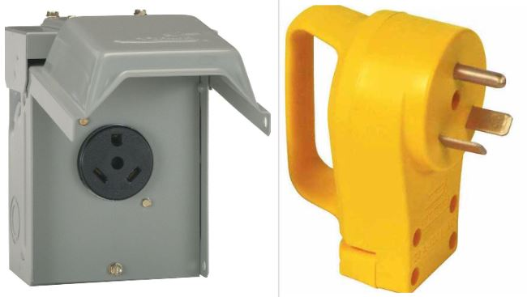

How To Wire A 30-Amp RV Outlet On Your Own (Safely)
 Have you ever thought about wiring your own 30 amp RV outlet before? Whether it be before going camping for the summer or camping in your backyard? Your RV is going to have power needs whether you are going to be staying at home or going on short camping trips. It is always best to keep your Rv batteries as healthy and charged as possible.You will have air conditioning on-hand, your refrigerator will be running, and all your tools, appliances, or equipment will continue to run smoothly. Below you will learn exactly what needs to be done in order to wire your own 30 amp rv outlet.
What does a 30 amp rv plug look like?

What is a 30 amp rv service?
In the Rv world, a 30-amp power service is defined as an outlet that offers 120 volts and outputs power through a three-prong male cable and a 30-amp breaker. The 30-amp Recreational Vehicle plug is usually referred to as the RV-30. The electrical cap reveals a U-shaped pin and two flat pins that are angled.
Wiring a 30 amp rv service is straightforward, and can be easily done by following the correct color codes for your connections and by using the proper wire size or sizes.
Things you will need to wire your 30 amp rv service
You just learned what a 30 amp rv service is, now we will go over all the materials that are needed to complete the job.
- 10 gauge wire (Recommended wire size).
- Electrical safety box
- Brand new breaker (Recommended to use a new breaker)
- A cover plate for your outlet (Protect against the elements)
- Staples to protect your 10 gauge wires
What size wire for 30 amp rv service?
To safely wire a 30 amp service, you will need a wire gauge of 10. Be sure to double check the 10 gauge wire before you install it.
How to wire a 30 amp rv service?
With all the materials on-hand, it is now time to install all the new wire you had laying around or the ones you might have purchased between the 30-amp outlet and the breaker. If you have never pulled any type of cable in the past, I suggest pulling the wires slowly in order to avoid any rips. Any rips made while pulling these wires will require a redo.
Follow these steps to wire your 30 amp service
Follow these steps in order to safely wire your 30 amp rv service.
- Use a box cutter carefully to cut the outer portion of of your cord's jacket cover. Leave a total of one inch to separate the 3 wires. Try your best not to damage any of the insulation that covers each wire.
- Next, using a wire stripper, remove 1/2 inch of insulation from each of the 3 wires. Twist the strands so that you will have a rope-like thread that is much more stronger than strands that have not been twisted.
- Try your best not to damage the brass pins when you draw them from their housing. Your main aim is to avoid trimming them.
- The color codes and link and be sure to link each cable correctly. The hot wire is black and should be connected to the screw that is brass-colored. The white neutral wire should be placed where the silver-colored screw is. The ground wire is bare green and should be connected to the green-colored screw. If there is no green screw then connect the ground wire to the U-shaped pin.
- Tighten up the small straps that are located on the cord's cover jacket at the top. Be sure to secure the wires that inside the 30 amp RV plug. Do not forget this step.
Can I Plug My 30-Amp RV Cord into a 50-Amp Power Pedestal?
Yes! You can plug your 30-Amp RV Cord into a 50-Amp Power Pedestal. Some people worry that the extra power that is supplied by a 50-amp outlet will fry their Recreational Vehicle's electrical system. But, that isn't true. You can plug a 30-amp RV cable directly into a 50-amp power outlet, such as a power outlet or pedestal at any campground that offers them. This is accomplished by using the correct adapter. Use the female end of the adapter to plug into your Recreational Vehicle cord, and you should plug the male end into the power pedestal
There are two main types of adapters available.
Can I Plug My 50-Amp RV Cord into a 30-Amp Power Pedestal?
Yes! You can plug your 50-amp rv cord into a 30-amp power pedestal. The same procedures and precautions needs to be taken just like plugging a 30-amp plug into a 50-amp pedestal.
Can you Plug your RV into a 15-Amp Home Electric Outlet?
Yes, you can plug your rv into a 15 amp outlet at your home. The type of charge that will be given to your rv will only be a trickle type charge. A trickle type charge is given to batteries to keep them healthy while they are not being used.
Wire size and gauge chart
| Wire Gauge | Amperage (Up To) |
|---|---|
| 14-gauge wire | 15 amps |
| 12-gauge wire | 20 amps |
| 10-gauge wire | 30 amps |
| 8-gauge wire | 40 amps |
| 6-gauge wire | 55 amps |
| 4-gauge wire | 70 amps |
| 3-gauge wire | 85 amps |
| 2-gauge wire | 95 amps |
These ratings are for copper NM encased cables, yet there are circumstances where these amperage scores may differ. For instance, there is light weight aluminum circuitry in some houses, and also light weight aluminum cords have their very own ampacity-carrying capability. Light weight aluminum electrical wiring was commonly made use of, yet due to the fact that it was discovered that light weight aluminum expanded more under load, it usually loosened up cable links and also in some cases triggered electric fires.
What is trickle charging?
Trickle charging is the method of charging a battery that is fully charged at a rate that is equal to its self-discharge rate. This allows the battery to stay in tip-top shape while it is not being used. If there is however any type of current being pulled from the battery then trickle charging will stop. Trickle charging will stop because batteries usually needs upwards 1 or 2 extra volts to keep fully charged while under load. What this means is that with cars that use a 12 volt battery to run lights and all other electronics, a charging rate of up to 14.7 volt is needed to keep the battery fully charged.
What size breaker do I need for a 30 amp RV plug?
A 30 amp Recreational Vehicle plug must actually be used with a 30 amp breaker. You could als plug it into a 15 or 20 amp breaker, but you run the risk of damaging your RV if you utilize more than the ranked power the circuit/outlet has been designed for.
Is a 30 amp RV plug 110 or 220?
There are three prongs on a 30 amp plug, there is a neutral wire, a 120 volt hot wire, and a ground wire. and is generally utilized on Recreational vehicles that have low load requirements.
How many watts does it take to run a 30 amp RV?
3600 watts are needed to run a 30 amp rv. To calculate how many whats is needed to run a 30 amp rv, you should use the formula of 30 amp X 120 Volts = 3600 watts.
What do I need to plug my 30 amp RV into my house?
The initial step is to ensure you have whatever you require. If your rv is a 30 amp rv, you'll require a 15a male adapter that is connected through a 30a female.
Can 12 gauge wire handle 30 amps?
No, you should never try to use a 12 gauge wire on a 30 amp circuit. A 12 gauge wire is meant to handle no more than 20 amps.
How far can 10 gauge wire carry 30 amps?
30 amps carried over a 10 gauge wire is not meant to be run over far distances. If you plan on going over 150 feet, you should upgrade the wire size from 10 gauge to 8 gauge.
Some uses of wires and the gauges needed
| Type of appliance | Amperage | Wire Gauge |
|---|---|---|
| Small lighting and lamp cords | 10 amps | 18-gauge |
| Light Duty Extension cords | 13 amps | 16-gauge |
| Lamps, Light fixtures, lighting circuits | 15 amps | 14-gauge |
| Kitchen, outdoor receptacles, and bathroom (outlets); 120-volt air conditioner | 20 amps | 12-gauge |
| Electric clothes dryers, electric water heaters, 240-volt window air conditioners | 30 amps | 10-gauge |
| Ranges and Cooktops | 40-50 amps | 6-gauge |
| Large electric heaters | 60 amps | 4-gauge |
Knowing How To Wire A 30-Amp RV Outlet On Your Own is a great skill when you own an rv. Be sure to check with a professional to go over your work to ensure that everything is as it should be. It is always better to be safe than sorry.